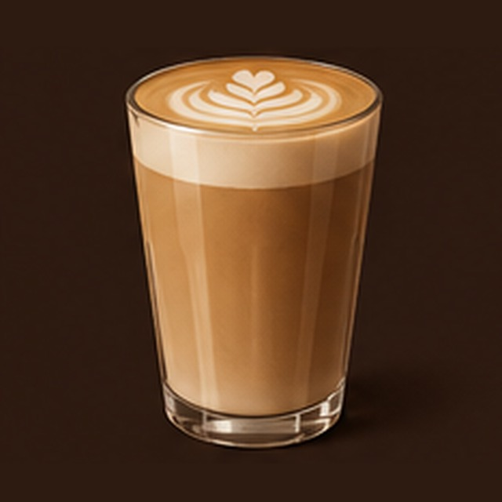

«Latte» significa «leche» en italiano, y el «caffè latte» es el café con leche que muchas familias italianas toman en casa por la mañana desde hace mucho tiempo. El latte de cafetería, con espresso, bastante leche vaporizada y una fina capa de espuma, se hizo famoso en Estados Unidos en la década de 1980, sobre todo en Seattle y California, y desde allí se extendió por todo el mundo.